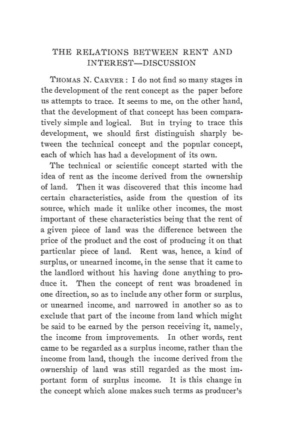

Nova Orleans, 1903: o Sul agrícola, Seligman e o destino do imposto
Leitura: 7 min
Nova Orleans, dezembro de 1903: Seligman propõe uma teoria social do imposto, técnicos do Sul expõem açúcar, arroz, algodão e tabaco, e Fetter redefine renda e juros.


Um trem especial saído de Nova York levou 105 pessoas a Nova Orleans no fim de dezembro de 1903; outro grupo veio de Chicago em vagões especiais. De 29 a 31 de dezembro, a American Economic Association realizou ali sua décima sexta reunião anual, no mesmo lugar e na mesma data que a American Historical Association, com duas sessões conjuntas. A primeira manhã foi dedicada aos problemas agrícolas do Sul, numa sala do tribunal civil da Jackson Square; a tarde, aos problemas industriais da região.
O programa era tão extenso que a comissão de publicações dividiu os anais em duas partes. Esta primeira saiu em fevereiro de 1904, como nº 1 do vol. 5 da terceira série; a segunda é o nº 70 deste arquivo. A nota editorial atribui o atraso à falta do registro estenográfico prometido: parte das discussões foi reconstituída pelos participantes, algumas saíram resumidas e outras se perderam. O volume reúne o manual da associação, o relatório da reunião, o discurso presidencial, a saudação de boas-vindas, seis trabalhos sobre o Sul e a sessão de teoria sobre renda e juros.
Quem paga, afinal, o imposto?
Edwin R. A. Seligman, no discurso presidencial “Social Aspects of Economic Law”, retomou pelo avesso o tema do ano anterior: em vez dos efeitos da economia sobre a vida social, a base social da lei econômica. Passou pelo valor, pelo comércio internacional, pela propriedade e pela questão sindical, e dedicou a maior parte do texto às finanças públicas, tema que, segundo ele, nenhum antecessor havia tratado num discurso presidencial. Sua tese: as doutrinas do benefício e da capacidade contributiva olham só para quem paga em primeira instância e ignoram a transferência e a capitalização do imposto. Por isso a prática americana, que abandonava o imposto geral sobre a propriedade, estaria na direção certa, e a teoria, errada:
“Se a teoria corrente não se harmoniza com os fatos, pior para a teoria.” (“If the current theory does not harmonize with the facts, so much the worse for the theory.”)
O que o Sul tinha a mostrar?
Os trabalhos agrícolas vieram de técnicos e dirigentes de associações. William C. Stubbs descreveu a usina central de açúcar da Luisiana e pediu estabilidade tarifária; D. F. Houston mediu o avanço do bicudo-do-algodoeiro no Texas; Lawson H. Shelfer tratou do tabaco. O número mais eloquente veio de S. A. Knapp, presidente da Rice Association of America: na Luisiana e no Texas, um acre de arroz exigia no máximo dois dias de trabalho humano, contra oitenta em Bengala e 120 no Japão.
À tarde, D. A. Tompkins sustentou que a escravidão nunca favoreceu a produção de algodão, e Charles C. Thach, do Alabama Polytechnic Institute, contestou com dados de 1850 a 1860. Richard H. Edmonds, editor do Manufacturers' Record, fez o balanço mais duro: em 1900, cada pessoa ocupada na agricultura do Sul produzia US$ 248, contra US$ 655 no resto do país. A estabilidade das regras foi pedida por Stubbs em termos gerais:
“A permanência da legislação nacional é quase necessária à prosperidade contínua de qualquer indústria.” (“Permanency in national legislation is almost necessary to the continued prosperity of any industry.”)
Renda e juros são coisas diferentes?
Na sessão de teoria, o trabalho de Frank A. Fetter, de Cornell, foi lido apenas pelo título e serviu de base a uma discussão com dez participantes. Fetter sustentou que o conceito clássico de renda mistura três ideias incompatíveis e propôs separar o uso de um bem de seu valor de capital: o juro apareceria só ao descontar rendas futuras. Thomas N. Carver e Jacob H. Hollander defenderam a distinção tradicional; Winthrop M. Daniels apoiou Fetter.
“A renda é o usufruto atribuível a qualquer agente material.” (“rent is the usufruct attributable to any material agent”)
Na reunião do conselho, Frank W. Taussig foi eleito presidente, e Chicago foi escolhida para dezembro de 1904. A pedido da Census Bureau, criou-se uma comissão de contabilidade e finanças municipais, presidida por Frederick A. Cleveland, e o conselho saudou o programa de pesquisa em história econômica americana do Carnegie Institute.
Na minha leitura
Na minha leitura, o discurso de Seligman é o texto de maior alcance do volume, porque desloca a pergunta da justiça tributária de quem recolhe o imposto para quem acaba suportando seu peso. A combinação de transferência e capitalização é uma ferramenta de análise de incidência: um imposto sobre imóveis pode subir aluguéis ou derrubar o preço da terra, e quem compra depois não paga nada. A conclusão prática, porém, depende de mercados que se ajustam, e o próprio texto registra o limite: a capitalização desonera o futuro comprador porque cobra tudo, de uma vez, do proprietário atual. A transição é o ponto em que a teoria encontra a política.
A proposta de Fetter caminha na mesma direção por outra via: separar o fluxo de serviços de um bem do valor presente desse fluxo, com o juro como taxa de desconto. É uma formulação próxima da que hoje se usa para precificar qualquer ativo. Os trabalhos sobre o Sul têm outro método, descritivo e estatístico, de quem conhece o campo; o dado de Knapp sobre o preço do arroz ao produtor e ao consumidor lembra que ganhos de produtividade na lavoura podem ficar no caminho entre a fazenda e a mesa.
Glossário
- Incidência do imposto
- quem efetivamente suporta o ônus de um tributo, que pode ser diferente de quem o recolhe.
- Capitalização do imposto
- queda no preço de um ativo equivalente ao valor presente do imposto futuro, que recai sobre o dono no momento da criação do tributo.
- Capacidade contributiva
- princípio de que cada um deve pagar conforme sua capacidade econômica, e não conforme o benefício recebido do Estado.
- Bicudo-do-algodoeiro
- inseto (boll weevil) que ataca botões e capulhos do algodão; chegou ao Texas vindo do México.
- Usina central
- fábrica de açúcar que processa a cana de vários produtores, trazida por via férrea.
- Beneficiamento por empreitada
- sistema em que o moinho processa o arroz do agricultor mediante pagamento, sem comprá-lo.
- Convenção de Bruxelas
- acordo europeu que aboliu prêmios à exportação de açúcar de beterraba e cartéis do setor.
- Quase-renda
- termo de Marshall para o rendimento temporário de bens de capital que se comporta como a renda da terra.
- Capitalização (em Fetter)
- cálculo do valor presente de uma série de rendas futuras, descontadas a uma taxa que expressa a preferência pelo presente.
Artigos desta edição
- Editorial Note — Comissão de publicações (pp. iii). Explica a divisão dos anais em duas partes, pelo programa extenso, e o atraso causado pela falta do registro estenográfico das discussões, reconstituídas em parte pelos participantes. JSTOR
- American Economic Association — Manual da associação (pp. 1–37). Introdução, estatuto, regimento, dirigentes para 1904, conselho, lista de sócios e resumo de 1º de fevereiro de 1904: 987 sócios e assinantes. JSTOR
- The Sixteenth Annual Meeting — Relatório da reunião (pp. 38–48). Programa das sete sessões de 29 a 31 de dezembro de 1903, reunião do conselho, relatórios do secretário e do tesoureiro, eleição de Frank W. Taussig para presidente e resolução de agradecimento a Nova Orleans. JSTOR
- Social Aspects of Economic Law — Edwin R. A. Seligman (Columbia University); discurso presidencial (pp. 49–73). Seligman sustenta que a lei econômica tem base social e que o ponto de vista individual gera erros na teoria. Exemplos: a propensão à troca de Adam Smith seria produto social; o valor dependeria de utilidade e custo marginais sociais; a separação entre comércio interno e internacional seria artificial. A parte principal trata de tributação: as doutrinas do benefício e da capacidade olham só para quem paga em primeira instância. Combinando transferência (difusão) e capitalização (absorção), propõe a “teoria do desaparecimento final” do imposto como ônus individual e conclui que tributar classes de propriedade, heranças e corporações pode ser justo, desde que se respeite o ônus sobre os proprietários atuais. JSTOR
- Address of Welcome — Edwin A. Alderman (presidente da Tulane University) (pp. 74–78). Saudação às duas associações: descreve Nova Orleans e o Sul, distingue industrialismo de comercialismo e expõe a posição sulista da época sobre a separação das raças. JSTOR
- Sugar — William C. Stubbs (diretor das Louisiana Sugar Experiment Stations) (pp. 79–98). Stubbs narra a indústria açucareira da Luisiana desde a safra comercial de Étienne de Boré, em 1795, a passagem do engenho a tração animal à usina central e a substituição de variedades importadas por mudas de semente. Descreve extração por moagem e difusão, clarificação, evaporação em múltiplo efeito, cozimento a vácuo, centrifugação e classificação dos produtos. Registra produção média de cerca de 300 mil toneladas longas, investimento de US$ 100 milhões e vinte mudanças na tarifa do açúcar desde 1789. Conclui que a Convenção de Bruxelas, ao abolir prêmios à exportação, reduziu a ameaça do açúcar de beterraba europeu, mas que a expansão de Cuba anulou parte do efeito. JSTOR
- Sugar-Discussion — John Dymond (pp. 99–101). Dymond descreve a ruína das antigas famílias de fazendeiros depois da Guerra Civil, a entrada de novos capitais e a formação das associações de produtores e da estação experimental. JSTOR
- Rice — S. A. Knapp (presidente da Rice Association of America) (pp. 102–109). Knapp relata que, por volta de 1885, agricultores da Luisiana adaptaram ao arroz a maquinaria das fazendas de trigo. Defende o arroz como cultura própria para terras úmidas e ácidas da costa do Golfo e como alimento. Compara o trabalho por acre: oitenta dias de homem e 21 de bois em Bengala, 120 dias no Japão, no máximo dois dias de homem e um e meio de parelha na Luisiana e no Texas, vantagem de quarenta a sessenta para um. Aponta três erros americanos: venda apressada, beneficiamento excessivo e preparo culinário. Observa que o arroz sai da fazenda a 2 ou 3 centavos por libra e chega ao consumidor a 8 a 12. JSTOR
- Rice-Discussion — S. Locke Breaux (vice-presidente da Rice Association of America) (pp. 110–112). Breaux critica o beneficiamento por empreitada e propõe que os moinhos comprem o arroz, classifiquem os lotes e coordenem a venda a partir de Nova Orleans. JSTOR
- Cotton and the General Agricultural Outlook — D. F. Houston (presidente do Agricultural and Mechanical College of Texas) (pp. 113–121). Houston examina o bicudo-do-algodoeiro, surgido no Texas em 1892-93 perto de Brownsville e em avanço de quarenta a cinquenta milhas por ano. Em 1903 a praga cobria mais de 5 milhões dos 7 milhões de acres de algodão do estado; ele estima perdas de 240 mil a 300 mil fardos num só ano. Compara condados atingidos e não atingidos e conclui que o inseto não pode ser exterminado, mas que plantio precoce, variedades precoces e cultivo cuidadoso permitem lucro. Na parte geral, mostra a recuperação agrícola do Sul a partir de 1890, com mais fazendas, menores, mais máquinas e maior diversificação. JSTOR
- Cotton and the General Agricultural Outlook-Discussion — George K. Holmes (Department of Agriculture), Thomas N. Carver, D. F. Houston e William C. Stubbs (pp. 122–128). Holmes trata do arrendamento, do penhor da safra e do trabalho negro e branco nas lavouras, citando o ex-governador Northen; Carver pergunta sobre rotação, e Stubbs descreve planos para conter o bicudo na Luisiana. JSTOR
- Tobacco — Lawson H. Shelfer (especialista em tabaco do Department of Agriculture) (pp. 129–134). Shelfer aponta três condições para o tabaco de qualidade: solo, clima e experiência no manejo. O solo seria o fator principal, pois áreas vizinhas produzem folhas de valor muito diferente; sementes da mesma origem tenderiam a convergir para uma variedade local. Recomenda sementes da região mais adequada a cada tipo, sombreamento com tela para folhas de capa e prática na capação, colheita e cura. Calcula que os Estados Unidos pagam cerca de US$ 8 milhões por ano a produtores cubanos pelo tabaco de enchimento, mais US$ 5 a 6 milhões em direitos, e sustenta que Texas e Flórida poderiam produzi-lo. JSTOR
- Tobacco-Discussion — J. B. Killebrew e William H. Glasson (pp. 135–143). Killebrew descreve a origem do tabaco amarelo na Carolina do Norte em 1852, o White Burley do Kentucky, os gostos nacionais e os monopólios estatais europeus; Glasson relata o crescimento de Durham. JSTOR
- The Cotton Industry — D. A. Tompkins (Charlotte, N. C.) (pp. 144–153). Tompkins resume a história do algodão nos Estados Unidos: do descaroçador de Whitney e Holmes, patenteado em 1794 e 1796, a quase 10 milhões de fardos em 1900. Sustenta que a escravidão nunca favoreceu a produção de algodão: teria afastado o trabalho livre, sufocado manufaturas e estimulado a emigração de brancos. Lista seis condições favoráveis do presente, entre elas manufaturas restabelecidas, imigração do Norte e uso de fertilizantes. Estima em cerca de US$ 100 milhões o custo anual da colheita manual, que uma máquina poderia reduzir à metade ou menos, e pede ao governo que defenda o acesso aos mercados da China e da Manchúria. JSTOR
- The Cotton Industry-Discussion — Charles C. Thach (presidente do Alabama Polytechnic Institute) (pp. 154–161). Thach contesta a tese de Tompkins sobre a escravidão com dados de produção de 1850 a 1860 e descreve o avanço do trabalho branco, dos fertilizantes, dos subprodutos do caroço e das fiações sulistas. JSTOR
- The Utilization of Southern Wastes — Richard H. Edmonds (editor do Manufacturers' Record) (pp. 162–175). Edmonds trata o desperdício como chave da história econômica do Sul: o descaroçador fortaleceu a escravidão, cujos benefícios couberam a uma minoria, e a guerra destruiu riqueza e organização do trabalho. Descreve o aproveitamento de resíduos: óleo, farelo e casca do caroço de algodão, frigoríficos atraídos pelo farelo, coleta de terebintina por copos, que elevou o produto por árvore, destilação de tocos de pinho e quedas-d'água. Compara 1880 e 1900: o capital industrial do Sul cresceu 348%, contra 242% no resto do país, mas o produto agrícola por pessoa ocupada era de US$ 248, contra US$ 655. Conclui que o Sul precisa de população e de qualificação. JSTOR
- The Relations between Rent and Interest — Frank A. Fetter (Cornell University); lido apenas pelo título (pp. 176–198). Fetter sustenta que os conceitos usuais de renda e juros misturam três ideias: renda como rendimento de uma classe social, como rendimento que não entra no custo de produção e como quantia absoluta paga por um bem medido fisicamente, enquanto o juro é expresso como porcentagem de um capital. Rejeita as duas primeiras como bases de classificação, pela impossibilidade de separar terra de melhoramentos e pela abstração da relação com o preço. Propõe distinguir o aspecto de riqueza e o aspecto de capital dos mesmos bens: renda é o uso de qualquer agente material; juro surge na capitalização, ao descontar rendas futuras. Daí três etapas da teoria do valor: utilidade, renda e capitalização. JSTOR
- The Relations between Rent and Interest-Discussion — Thomas N. Carver, Jacob H. Hollander, Charles W. Macfarlane, Lindley M. Keasbey, W. G. Langworthy Taylor, Richard T. Ely, James E. Le Rossignol, Franklin H. Giddings, Winthrop M. Daniels e Frank A. Fetter (pp. 199–240). Carver e Hollander defendem a distinção tradicional, Ely vê exagero na reação à teoria ricardiana, Daniels apoia Fetter, e Fetter responde às críticas. JSTOR
Fontes
- Editorial Note (pp. iii). JSTOR · Internet Archive (PDF)
- American Economic Association (pp. 1–37). JSTOR · Internet Archive (PDF)
- The Sixteenth Annual Meeting (pp. 38–48). JSTOR · Internet Archive (PDF)
- Social Aspects of Economic Law (pp. 49–73). JSTOR · Internet Archive (PDF)
- Address of Welcome (pp. 74–78). JSTOR · Internet Archive (PDF)
- Sugar (pp. 79–98). JSTOR · Internet Archive (PDF)
- Sugar-Discussion (pp. 99–101). JSTOR · Internet Archive (PDF)
- Rice (pp. 102–109). JSTOR · Internet Archive (PDF)
- Rice-Discussion (pp. 110–112). JSTOR · Internet Archive (PDF)
- Cotton and the General Agricultural Outlook (pp. 113–121). JSTOR · Internet Archive (PDF)
- Cotton and the General Agricultural Outlook-Discussion (pp. 122–128). JSTOR · Internet Archive (PDF)
- Tobacco (pp. 129–134). JSTOR · Internet Archive (PDF)
- Tobacco-Discussion (pp. 135–143). JSTOR · Internet Archive (PDF)
- The Cotton Industry (pp. 144–153). JSTOR · Internet Archive (PDF)
- The Cotton Industry-Discussion (pp. 154–161). JSTOR · Internet Archive (PDF)
- The Utilization of Southern Wastes (pp. 162–175). JSTOR · Internet Archive (PDF)
- The Relations between Rent and Interest (pp. 176–198). JSTOR · Internet Archive (PDF)
- The Relations between Rent and Interest-Discussion (pp. 199–240). JSTOR · Internet Archive (PDF)
- Sumário da edição no JSTOR: Publications of the American Economic Association, 3ª série, vol. 5, nº 1.
Documento em domínio público (EUA, publicado antes de 1931), via JSTOR Early Journal Content e Internet Archive. Resumo e comentário do autor deste site, sem afiliação com a American Economic Association. Encontrou um erro? Escreva: a correção é publicada no próprio texto, com data.
← Nº 68 · Kinsman, 1903: sessenta anos de imposto de renda estadual Nº 70 · Nova Orleans, 1903 (II): reservas, crédito, trustes e o fisco →